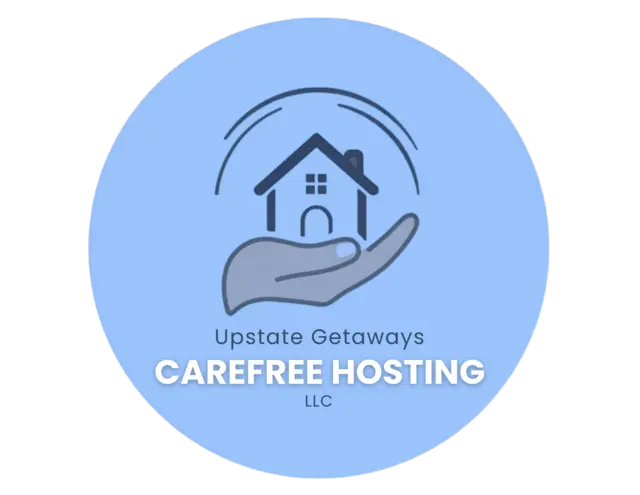

For homeowners · Carefree Hosting
Enjoy your home.
Let it reach
its potential.
Rental oversight, property care, and thoughtful hospitality from a local team focused on your home and the guests it welcomes.
Carefree Hosting
Your home deserves thoughtful support.
Thoughtful oversight
Explore an approach to rental management that connects homeowner goals, guest communication, and the details of a well-run stay.
Care for your property
Learn about property care program levels, guest-ready presentation, and the essentials that help protect your home.
A clear next step
Start with the owner guide to understand the approach and available support, then connect with the team about your property.

Take a closer look
A clearer picture of the Carefree approach.
Our interactive owner guide brings together the hosting approach, property care programs, guest-ready standards, and next steps for homeowners.
Open the full owner guideGood to know
Where can I learn about property care programs?
The owner guide explains the available program levels and the team’s approach to year-round property care.
Looking for another part of the company?
Our family includes Carefree Hosting for homeowners, Carefree Cleans for cleaning support, and Upstate Getaways for visitors.
Let’s find what works for your home.
Take the next step with Carefree Hosting.